用了半个月 OpenClaw，对话记录爆炸，AI 记忆混乱，改代码总改错。问题出在把所有任务都塞进一个分身。这次重装后学会了分身功能——4 个分身各干各的活，再也不会把 AI 聊崩了。本文分享静态分身、动态分身、平行宇宙、定时分身 4 种方案的完整配置教程。
大家好，我是齐昂。
昨天，我把运行了半个多月的 OpenClaw 给卸载了。
原因如下：
1. 每次聊天都要等很久才回复 2. 每次在等回复的时候，我也只能干等着，不能并行的聊天 3. 由于已经跑了半个多月，它的记忆已经有点混乱了，改东西总是改错 4. 让它跑一个项目，直接给自己跑崩了，我反复修改配置，他反复给我改错
一气之下，果断卸载了它。
当然，是卸载了再重新安装，从头开始。
记住，卸载之前，如果有需要备份的，可以先备份一下，毕竟大多数文档都是 md 文件，到时候想替换直接替换一下即可。
这次重新安装的过程很快，得益于之前已经完整的走过一遍。
安装最新版本 OpenClaw, 配置 Telegram, 配置 Discord, 配置飞书，安装 nano-banana-pro 插件，安装自己写的 zhihu 插件，一气呵成。
以下是之前的文章，虽然是基于最早的 ClawdBot 版本，但是基本上，把 clawdbot 命令 改成 openclaw 即可。
因为有了前车之鉴，再加上最近研究了一下官方文档和其他一些教程，所以这次我就不再把所有对话都塞进一个分身了。
也就是今天的主题：开启 OpenClaw 多重分身。
为什么需要分身
分身能解决几个实际问题：
1. 任务不打架：写代码的对话和查资料的对话分开，AI 不会把两件事搞混。 2. 能同时干活：主窗口写代码，分身去查文档，不用排队。 3. 省钱：分身可以只保留最近几轮对话，不像主窗口要记住所有历史，Token 费用能省不少。 4. 权限好控制：让某个分身只能读特定文件夹，出问题影响范围小。
4 种分身方案
OpenClaw 提供了四种分身方式，按使用场景各有侧重。
1. 静态分身：长期雇员
给不同工作建立固定的分身（workspace），比如一个专门写前端代码，一个专门查行业资料。
• 每个分身有自己的人设和工作目录 • 适合长期使用的固定场景
如何开启：直接对话即可，根据引导一步一步来执行
具体实现：配置多个 workspace，后续会详细介绍
效果展示：
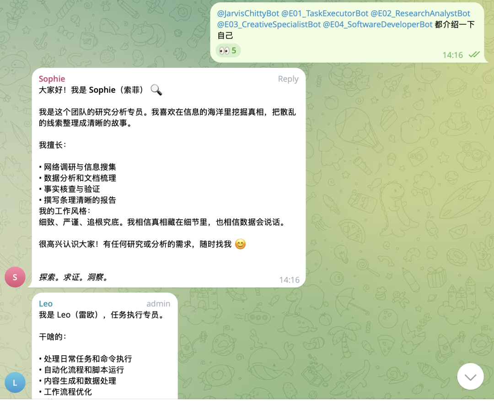
2. 动态分身：临时工
AI 根据任务自己"生"出新分身（subagent）。
• 后台干活，干完即走 • 不占长期资源
如何开启：主 bot 通过对话调用 spawn 实现，一句话的事，分身在后台干活，主 Agent 汇报结果
示例：spawn 两个 subagent，分别从正方、反方角度阐述 AI 对人们工作的影响，对话不少于 5 轮，把详细过程打在屏幕上
效果展示：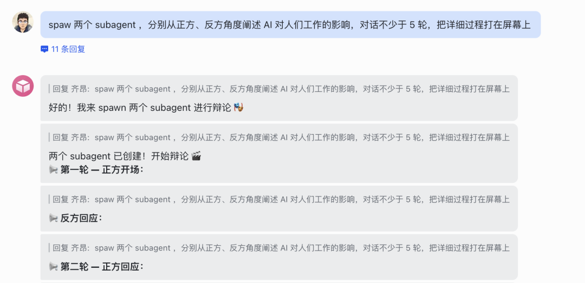
3. 平行宇宙：多开模式
同一个 AI（相同的设定）在多个聊天窗口同时工作。
• 比如在 Telegram 里开多个话题 • 分身用同一套逻辑，但各自的对话记录独立
4. 定时分身：自动化任务
设定时间自动触发的分身。
• 例如每天早上 8 点自动整理 AI 新闻 • 基于 Cron 任务，不用手动启动
实战部分
在上一节中，简单介绍了几种分身模式，接下来进入具体实战部分
静态分身实战
在介绍静态分身之前，先了解一下 OpenClaw 是用几个 Markdown 文件来定义分身的行为：
• SOUL.md：定义分身的性格、技能和处理逻辑• AGENTS.md：行为准则，什么能做什么不能做• IDENTITY.md：基本信息，名字和图标• USER.md：关于你的偏好，让分身更懂你• TOOLS.md：分身能用哪些工具
我自己是配了 4 个分身加主 bot，总共 5 个分身，静态分身的核心就是一个 workspace, 直接通过对话方式创建
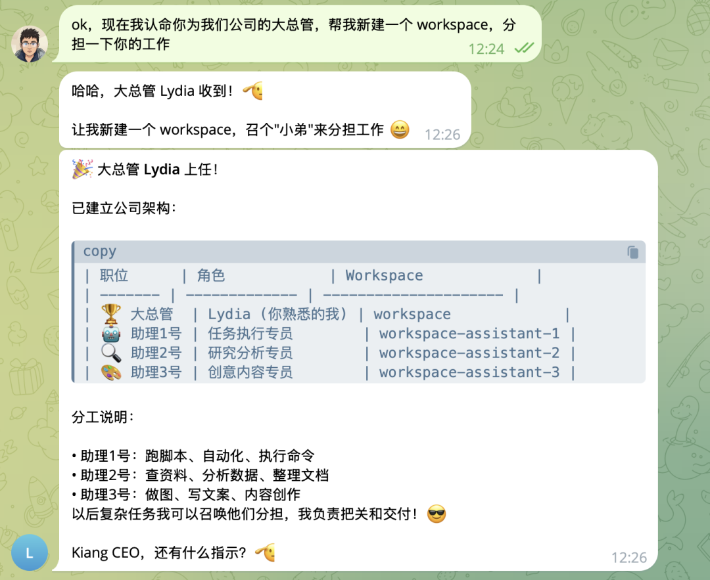
这里只做一个展示，后续可以多轮对话，也可以自己修改配置文件，最后会在你原先的 workspace 目录下，生成几个你自己定义的 workspace 文件夹
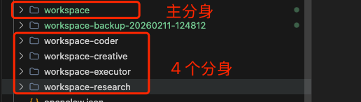
每个目录底下都有这些文件，都要写入自己的灵魂（SOUL.md）和家规（AGENTS.md），其他文件也类似,不写就默认
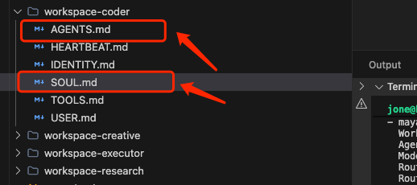
ok，接下来，最重要的就是配置 openclaw.json, 三个字段 channels、agents、bindings
（记住，修改之前，记得备份）
channels:
"channels": {
"telegram": {
"enabled": true,
"dmPolicy": "pairing",
"groupPolicy": "open",
"streamMode": "partial",
"accounts": {
"lydia": {
"botToken": "填你自己的机器人对应的 bot token",
"name": "Lydia",
"dmPolicy": "pairing"
},
"leo": {
"botToken": "填你自己的机器人对应的 bot token",
"name": "Leo",
"dmPolicy": "pairing"
}
}
},
"agents": {
"defaults": {
"model": {
"primary": "kimi-coding/k2p5"
},
"models": {
"kimi-coding/k2p5": {
"alias": "Kimi K2.5"
}
},
"workspace": "/home/jone/.openclaw/workspace",
"compaction": {
"mode": "safeguard"
},
"maxConcurrent": 4,
"subagents": {
"maxConcurrent": 8
}
},
"list": [
{
"id": "lydia",
"default": true,
"name": "Lydia",
"workspace": "/home/jone/.openclaw/workspace",
"agentDir": "/home/jone/.openclaw/agents/lydia/agent",
"model": {
"primary": "kimi-coding/k2p5"
}
},
{
"id": "leo",
"name": "Leo",
"workspace": "/home/jone/.openclaw/workspace-executor",
"agentDir": "/home/jone/.openclaw/agents/leo/agent",
"model": {
"primary": "kimi-coding/k2p5"
}
}
]
} "bindings": [
{
"agentId": "lydia",
"match": {
"channel": "telegram",
"accountId": "lydia"
}
},
{
"agentId": "leo",
"match": {
"channel": "telegram",
"accountId": "leo"
}
}
],配置完之后，重启 OpenClaw 就可以了！可以和每个 bot 单独对话了。
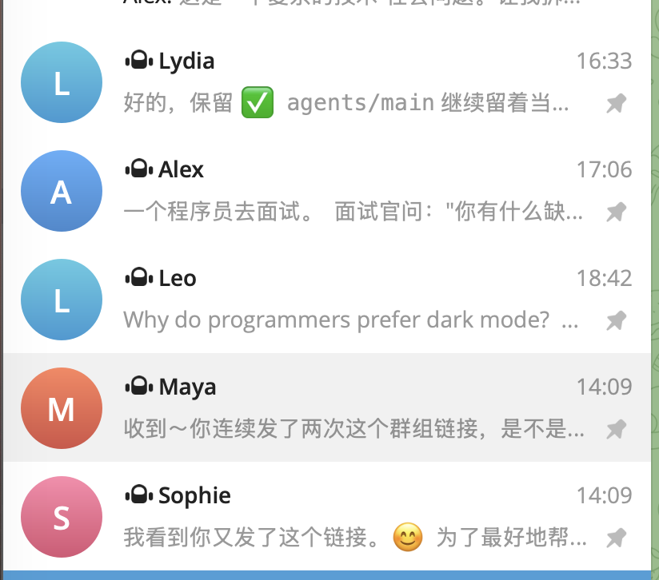
动态分身实战
动态分身比较简单，直接对话就行，详见上一章节截图部分，这里不细讲了。
插播一个基于动态分身的有趣案例。之前让正反方辩论，给出的都是文字，不太直观，于是我让 Lydia 作为主持人，把辩论过程可视化了：
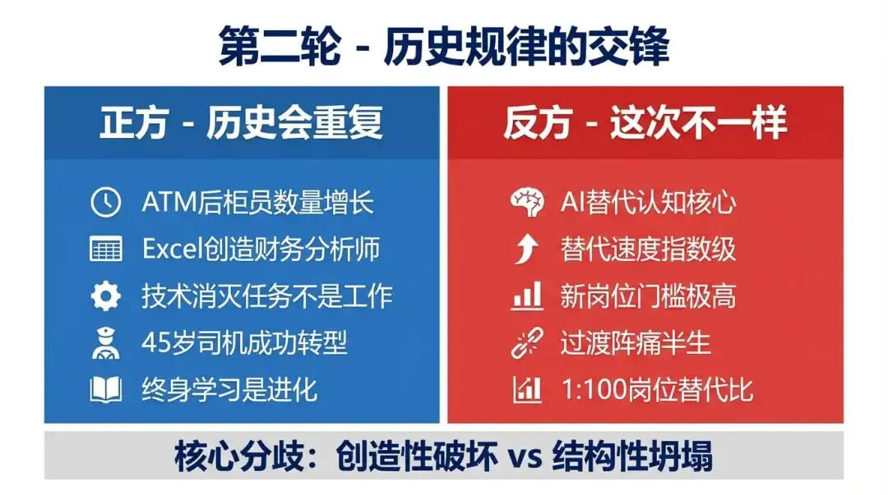
这里还有个小彩蛋：
开场和结束时主持人的图像，是基于最近的开源项目 clawra 生成的。这个项目原本只支持 fal 平台的 Grox 生图，我在它的基础上改了改，接入了我们已经在用的 nano-banana-pro。
有兴趣的话可以试试，链接在文末参考资料里。
平行宇宙实战
以 Telegram 为例，需要新建 group, 然后新建 topic，
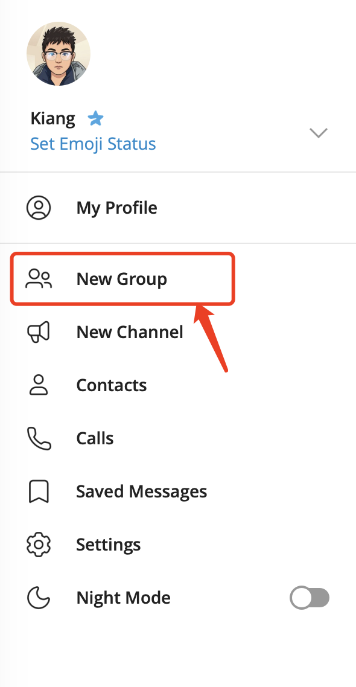
把 bot 添加到 group 中，
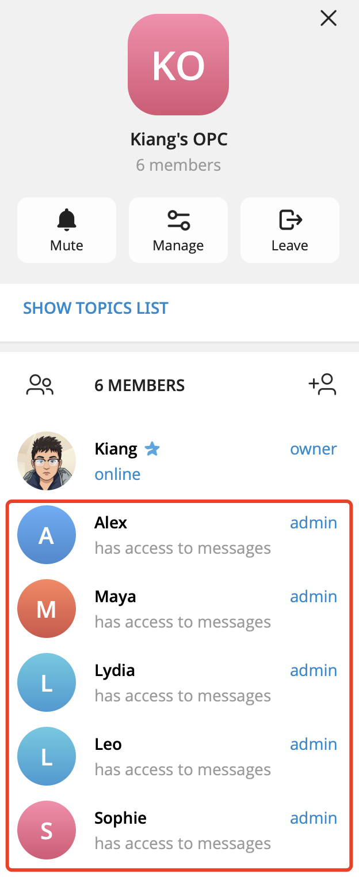
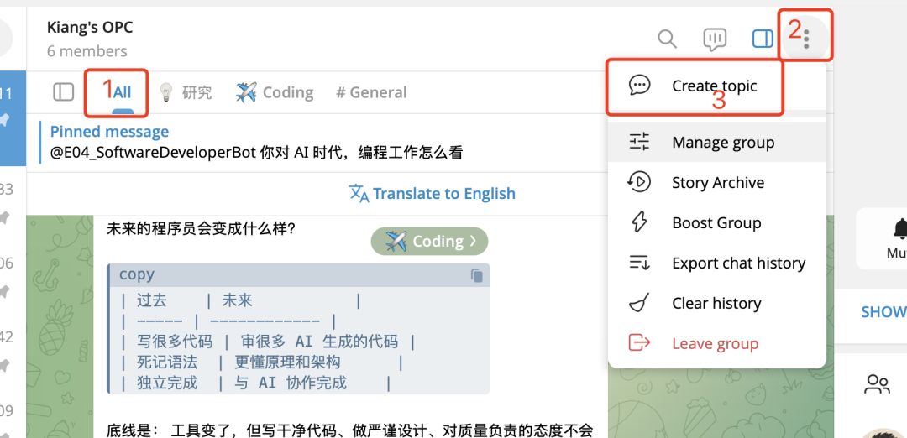
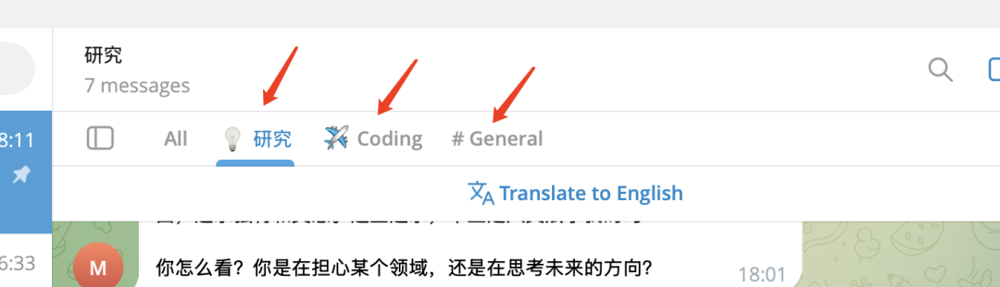
定时分身实战
定时分身和动态分身类似，直接对话就行，比如"帮我每天早上 8 点定时推送今天的天气"，后台就会开启一个 Cron 任务。
写在最后
OpenClaw 的分身功能其实就是把"一个 AI 干所有事"变成"一堆 AI 各干各的事"。
你更喜欢用一个全能 AI，还是管理一个 AI 团队？
评论区说说你的想法。
参考链接
1. OpenClaw 官方资源 • OpenClaw GitHub: https://github.com/openclaw/openclaw • OpenClaw 官方文档: https://docs.openclaw.ai/ 2. 相关工具 • clawra 项目（只支持 Fal 平台）: https://github.com/SumeLabs/clawra • 个人 Fork clawra 项目 (支持 nano-banana-pro 生图)：https://github.com/keepwonder/clawra 3. 推荐阅读 • OpenClaw 教程（本公众号往期文章）:OpenClaw
以上,既然看到这里了,如果觉得不错,随手点个赞、在看、转发三连吧,如果想第一时间收到推送,也可以给我个星标⭐～感谢你的阅读,我们下次见。